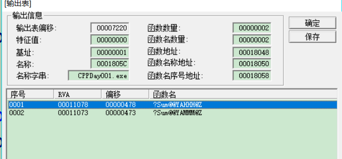

const int nNum = 10;int arr[nNum] = {};// error c中const定义的是变量数组长度定义要求：整型常量
const int nNum = 10;int arr[nNum] = {};const定义的整型数才可以作为数组长度
const float nNum = 10.1;int arr[nNum] = {};// error看const在谁的前面
const int *p;// const 修饰的 *p 常量指针 从前向后读int *const p;// const 修饰的 p 指针常量 从前向后读const int nNum = 10;// CPP中 const定义的值必须初始化nNum = 100;// error!!! CPP 中 const 定义的值不允许被修改int const * p1;
const int *p2;// 两个一一样的
const int *p;// 定义的变量是p const修饰的是*p，所以p不用初始化int a = 200;p = &a;// *p和a *p = 200等价于 a=200*p = 200; // *p被const修饰，不允许修改*pa = 200; // a可以更改，*p不可以，const只是在编译语法上限制修改*p，不是在锁定内存，和常量数据区是两个意义int a = 100;int * const p = &a;// const 修饰的是p,所以p必须初始化 p不允许被修改int b = 200;p = &b;// error p不能被修改*p = 200;// const 修饰的是p不是*p所以可以修改*p// p不可以修改，*p可以被修改// 但是nNum是const值，不允许修改，假如可以这么初始化// 就可以让*p = 200;但是nNum又不允许被修改，造成冲突const int nNum = 10;int * const p = &nNum;define 也叫宏定义
一般用define定义的宏名称大写
- 无参宏
// 1. PI就是3.14 值不能给值赋值int a = PI;// int a = 3.14;PI = 5; // 3.14 = 5;// 2. PI就是3.14，不能对3.14取地址printf("%p",&a);printf("%p", &PI);// printf("%p", &3.14);不建议直接使用无参宏定义常量数据，建议使用const定义
- 宏有内存吗？ 宏不能取地址 const有内存
- 宏有类型吗？ 宏没有类型，const有类型，有类型就有安全检查
// 所有对PI的使用，都是直接对3.14的操作int main(){const int pa = 50;printf("pa = %d\n", pa);int *pb = (int*)&pa;*pb = 100;printf("pa = %d\n", pa);printf("*pb = %d\n", *pb);int a = 50;return 0;}// 有参宏，有参宏的参数无类型，直接替换，不考虑类型检查int main(){// 宏展开的原则：原地替换，不做多余的事char * p = FUN("123");char *p = "123" + 2;int a = 1, b = 2;a = SUM(a, b)*SUM(a, b);// 3*3? errora = a + b*a + b;return 0;}int _tmain(int argc, _TCHAR* argv[]){int nNumA = 5;int nNumB = 0;int nResult = 0;//nResult = MAX(++nNumA, nNumB);// nNumA=7//nResult = (++nNumA) > (nNumB) ? (++nNumA) : (nNumB + 10);nResult = MAX(++nNumA, nNumB + 10); // nNumA=7nResult = (++nNumA) > (nNumB + 10) ? (++nNumA) : (nNumB + 10);return 0;}
- 为什么用宏，编译时替换，它是在调用它的地方原地展开(替换),函数调用是调用，调用时代码控制权会转移到函数实现部分，有跳转，而跳转指令影响代码执行速度，宏展开不会发生跳转，不影响速度
- 宏展开会占用更多的代码，而函数调用只是跳转到函数代码执行部分，执行的都是同一份代码
- 这是速度和体积的较量
inline int Max(int a, int b) { return a > b ? a : b;}知道有内联函数就可以了，不需要掌握，因为牛逼的编译器已经解决了这个问题，它会自动检测函数是否需要内联
// 1. 写不写";"int _tmain(int argc, _TCHAR* argv[]){ int a = 1, b = 2; bool b = BIG2(a, b); if (BIG(a, b)) { printf("a"); } else { printf("b"); } return 0;} // 2. 写不写"空格"->宏和参数之间 #define MAX(A,B) A>B?A:B; #define MAX1 (A,B) A>B?A:B; int _tmain(int argc, _TCHAR* argv[]) { int a = 1, b = 2; MAX(a, b); MAX1 (A, B); return 0; }// 申请10个int型空间 // C int *p = (int*)malloc(sizeof(int) * 10); // C++ int类型，10个元素个数，不是字节，new什么类型就返回什么类型的指针 int *p1 = new int[10]; // C++ 返回的类型可以强转 char *p2 = (char*)new int[10]; // 释放 delete 和delete[]分别和new以及new[]对应 int *p3 = new int;// 申请了1个 int *p4 = new int[10];// 申请了10个 delete p3; p3 = nullptr; delete[] p4; p4 = nullptr; // NULL 和 nullptr int a = 0; // NULL int *pa = 0;// nullptr int *p3 = new int(10);// 申请并初始化地址里面的值为10 int *p4 = new int[10]{1,2,3};// 申请了10个int Sum(int a, int b){ return a + b;}char Sum(char a, char b) { return a + b;}实际名字

根据参数类型和参数个数加不同的后缀，来区分表面上同名的函数
函数重载的定义：函数参数类型、个数、顺序3者满足其1，我们就可以同名，同名函数之间彼此构成重载
char Sum(char a, char b) { return a + b;}int Sum(char a, char b) { return a + b;}int _tmain(int argc, _TCHAR* argv[]){ Sum('a','b'); return 0;}void Print(bool bStu = true){ if (bStu) { printf("学生！"); } else { printf("不是学生！"); }}int _tmain(int argc, _TCHAR* argv[]){ // 默认是true Print(); Print(false); return 0;}// 函数有多个参数// 必须从右向左依次定义，中间不允许隔断// 就是说，有默认参数的参数，其右边肯定有默认参数void Fun(int a = 30, char b,int c = 10){}// 传参的时候只能省略右边,不能省略左边 // 如果省略b，必须省略c Fun(1, 2, 3); Fun(1, 2);// Fun(1,2,10) Fun(1);// Fun(1,20,10) Fun();// Fun(30,20,10);重载函数与有默认参数的函数调用冲突
void Fun(int a = 30, char b = 20,int c = 10){}void Fun(int a, char b) {}int _tmain(int argc, _TCHAR* argv[]){ Fun(1, 2);// Fun(1,2,10) return 0;}int a = 10; // 给a起个别名叫b // b有额外的内存吗 // b使用的就是a的内存 // b必须初始化，而且不能被重新赋值 int &b = a; b = 20;// a = 20; int c = 30; b = c;// a = c;不是让b成为c的别名//void Swap(int a, int b)//{// int temp = a;// a = b;// b = temp;//}void Swap(int* a, int* b){ int temp = *a; *a = *b; *b = temp;}void Swap(int& a, int& b){ int temp = a; a = b; b = temp;}int _tmain(int argc, _TCHAR* argv[]){ int c = 10; int d = 20; //int &a = c; //int &b = d; //int temp = a; //a = b; //b = temp; Swap(c, d); // 给a起个别名叫b // b有额外的内存吗 // b使用的就是a的内存 // b必须初始化，而且不能被重新赋值 int &b = a; b = 20;// a = 20; int c = 30; b = c;// a = c;不是让b成为c的别名 return 0;}&和类型名在一起的时候叫引用 int & a -> 引用
&和变量在一起的时候叫取地址&a -> 取地址